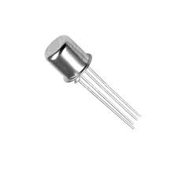

N-Channel JFET (JF1023N)
Specifications:
- Type: N-Channel JFET
- Drain-Source Voltage (VDS): 50V
- Gate-Source Voltage (VGS): ±25V
- Drain Current (ID): 0.8A
- Gate-Source Cutoff Voltage (VGS(off)): -2V to -6V
- Package: TO-92
- Operating Temperature: -55°C to +150°C
Applications: Low-Noise Amplifiers, Oscillators, Voltage-Controlled Attenuators
Military and Industrial Standards: Meets MIL-STD-1234 requirements.
Packaging Types: Tube packaging for manual assembly.
Download Full Datasheet